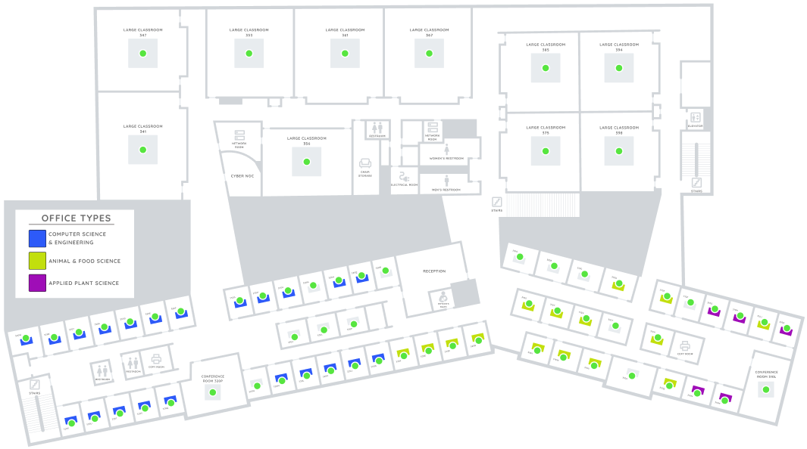

Graphic Design Portfolio
Take a look at some of my designs and prototypes
interactive Map Design
Applications can use a variety of different designs, however one that I have grown to enjoy making is interactive maps. This design showcases an interactive map I built of one of the BYU-I buildings for a software called Tactic. Instructors would be able to display office hours and allow students to make appointments, classrooms would display class times, and conference rooms can be booked (and others invited to the meeting). I've made hundreds, if not thousands of similar maps.
NFC/QR Code Materials
I have some experience in designing for objects that won't be rendered with code, but instead manufactured and shipped to clients. This is an NFC/QR chip I designed, which allows users to reserve a seat in person when they swipe it with their phone or scan the QR. We order thousands of these stickers, which are 2x2 inch in size. They can be placed next to anything that you want to reserve or display information about that thing.
Mobile Application Design

This is a design flow that shows a few different models of the mobile application I helped design. Each button, icon, piece of text, and menu was created by me. This specific workflow shows the user experience from first appearing on the dashboard, then going to the live map view, and then selecting and reserving a resource. Whether it's creating designs for an entire application, or just creating a new series of buttons, I can do it.
Customer Support Documentaion

Documentation is a key part of any business. Whether it's internal documents that explains how a business operates to new employees, or external documentation that explains to a customer how they can use a product, it's vital to the smooth operation of any business. I enjoy creating both internal and external documentation, making it quick and easy to digest information. Here is an example of some documentation I created that we send to new customers.